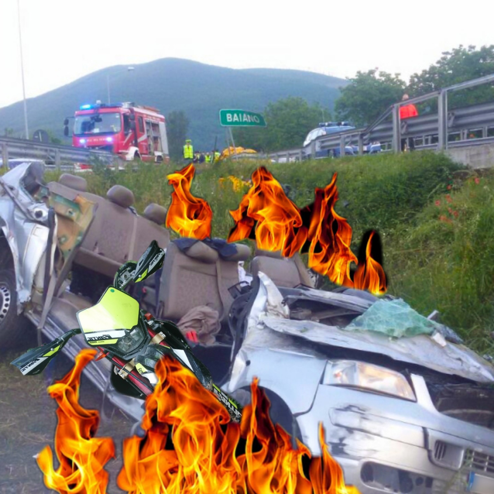

E' passata più di una settimana dall'evento
dell'anno, il tour, e ancora non si parla d'altro.
Gli ospiti ancora ringraziano il proprietario,
alcuni non hanno addirittura resistito a tornare
nella Metropoli di Baiano. Fanatici dello shopping
ormai sempre in coda da Silvana, aspiranti capitreno
ammirano costantemente lo stabile ferroviario...
E' ancora frizzante l'aria nella chat dello Staff.
Richieste di un bis o di nuovi incontri ed accordi per
investire nella città del futuro. A tal proposito il Capo Supremo,
Alessandro Flavio Ridolfi afferma di aver giocato un ruolo
essenziale nella produzione, ricerca e sviluppo della nuova Tesla
Roadster, in arrivo nei prossimi anni. Dobbiamo sottolineare
inoltre come questo abbia avuto un impatto sulla campagna "Seconda
Occasione" che consiste nel riassumere addetti alle pulizie,
inservienti e lavoratori sottopagati in settori più ambiti come
l'industria automobilistica e aerospaziale di Elon Musk.
Ed è proprio da questo gruppo che è emersa la
terribile notizia. Nella ricerca di succulenti
particolari riguardo all'imprenditore, abbiamo
appreso che Ridolfi è ora ricoverato all'ospedale
maggiore del Bunker di San Giovanni.
Le autorità hanno subito smentito, forse per
evitare altre fughe di notizie, ma probabilmente
hanno ragione. Fatto sta che il Presidente non si
è ancora espresso.

Nelle prossime ore riusciremo ad ottenere
maggiori informazioni, ma per ora vi lasciamo alla
dichiarazione del Generale Natali, fonte prima
dell'accaduto.
«Ma non lo sai? Purtroppo sta ricoverato perché
l'hanno chiappato li davanti a pensa che vanno sempre
guardando la a u negozio e na volta sci e una no
acciaccono qualcuno. Ovviamente il pirata ha già subito
ripercussioni il che però non implica l'immediata
guarigione del CEO che avrà una degenza minima
di 15 giorni.»